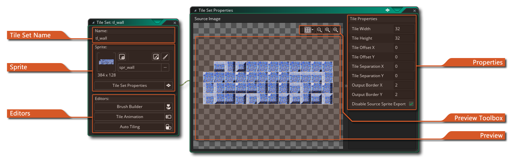
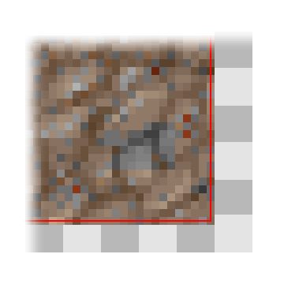
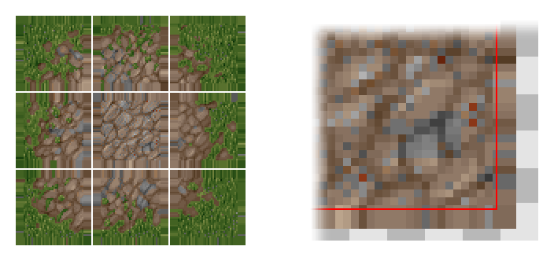
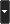
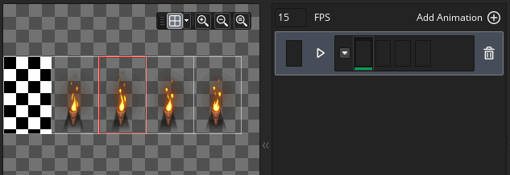
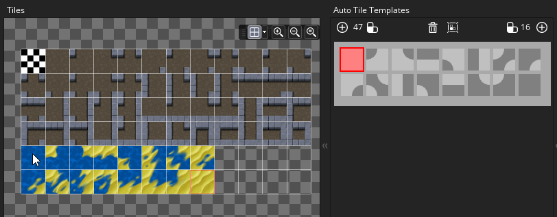

 Un conjunto de mosaicos es un recurso gráfico para dibujar niveles y otros componentes estáticos de su juego. Un conjunto de mosaicos se compone de una sola imagen que luego se divide en diferentes "celdas" (mosaicos), y cada mosaico se puede colocar en el editor de sala para crear una imagen completa. A continuación puede ver dos sprites de ejemplo que se pueden usar como conjuntos de mosaicos: 
Estas son las formas más comunes en que las personas crean conjuntos de mosaicos, ya sea que estén todos atascados o con pocos espacios que los separen, y GameMaker Studio 2 puede manejar ambos tipos. Esencialmente, todos los tilesets deben estar compuestos por imágenes que encajen dentro de una cuadrícula claramente definida, con cada celda de la cuadrícula con el mismo tamaño (tenga en cuenta que mientras que las imágenes que se muestran arriba están formadas por mosaicos cuadrados, se puede hacer un conjunto de mosaicos de azulejos rectangulares también). Al crear sus tilesets, tenga en cuenta que la celda de la cuadrícula superior izquierda siempre debe estar vacía, ya que esta es la ficha que GameMaker Studio 2 usará para las casillas "vacías" en una sala y para borrar las fichas existentes (e incluso si tiene píxeles en esa parte de la imagen serán ignorados).
Cuando crea por primera vez un recurso de conjunto de mosaicos, se abre la ventana del editor de conjuntos de mosaicos con las siguientes opciones:
Aquí puedes dar un nombre a tu conjunto de fichas. Los nombres solo pueden ser alfanuméricos y solo pueden usar el símbolo "_" de la barra inferior, y no pueden comenzar con un número.
Aquí puede seleccionar el recurso de sprite para crear nuestro conjunto de mosaicos. Al hacer clic en el botón principal, se abrirá el Explorador de recursos, donde podrá elegir el elemento que desee usar para el conjunto de fichas:
También puede hacer clic en el botón Nuevo Sprite
para crear un nuevo recurso de sprite (que abrirá el editor de Sprite para el nuevo recurso dentro del espacio de trabajo para su edición), o puede editar el sprite seleccionado actualmente usando el botón Editar Sprite
, o incluso elija editar la imagen del sprite en sí mismo en el Editor de imágenes presionando
botón.
De forma predeterminada, al abrir un conjunto de mosaicos, también se mostrará la ventana Propiedades del conjunto de mosaicos (ver a continuación), pero si lo cierra, puede hacer clic en el botón aquí para volver a abrirlo.
La ventana Propiedades del conjunto de mosaicos es para designar el tamaño del mosaico base (el valor predeterminado es 16 píxeles cuadrados), la cantidad de compensación y la separación entre mosaicos (estas dos últimas opciones se usan con sprites como el que se muestra arriba donde hay espacios entre las partes individuales de los azulejos). También puede establecer los valores del Borde de salida para la imagen del conjunto de mosaicos, que controla cómo se almacenará la imagen en el disco y agregar píxeles extra alrededor de cada mosaico, según sea necesario.
Debido a la forma en que se representan los azulejos, deben estar preparados de antemano con un borde alrededor de cada uno para "manchar" los bordes. La imagen que se muestra a continuación ilustra cómo los mosaicos son mapeados generalmente por los controladores gráficos del dispositivo, con la línea roja alrededor del mosaico donde se asignan las coordenadas U, V (Las letras "U" y "V" se usan para describir la textura 2D malla porque "X", "Y" y "Z" ya se usan para describir las coordenadas espaciales de la habitación y el objeto):
Como puede ver, elige el centro del texel (un texel es solo un pixel en un mapa de textura) para mapear directamente cuando dibuja la imagen en la habitación. Ahora, a una escala de 1: 1, todo está bien, pero ¿qué sucederá cuando bajemos este mosaico? El problema con la reducción es que cuando se reduce, los UV también se reducen y tratan de encajar en un espacio más comprimido, pero obviamente esto no puede suceder, por lo que el controlador de gráficos elige qué téxeles dibujar en función de los centros de píxeles disponibles. Entonces, si estamos "simplemente" moviéndonos a un nuevo píxel de pantalla, porque los controladores gráficos usan el centro del píxel para decidir con qué dibujar, seleccionará un téxel que rodee el mosaico, no un texel en el mismo mosaico.. 
La ilustración anterior muestra un mosaico dibujado en 6 píxeles de pantalla, y esto muestra que cuando se superpone un poco en el siguiente píxel de la pantalla, el controlador de gráficos tiene que elegir entre soltar ese téxel o intentar llenarlo con lo que piensa es un texel válido. Digamos que en este caso decide dibujar el texel superpuesto en el píxel de la pantalla y, como ahora está claramente fuera de nuestro mosaico, obtiene este píxel del siguiente mosaico o de los pequeños espacios que proporcionó alrededor de los mosaicos. lo que significa que cuando se encoja obtendrás grietas entre las "fallas" de los mosaicos en la forma en que se dibujan y aquí es donde surge mucha confusión... Cada controlador de gráficos y dispositivo lo hace a su manera, lo que significa que los resultados puede ser impredecible y tener un aspecto terrible... pero si tiene cuidado y planifica con anticipación puede evitarlo.
Con los juegos de gama alta si dibujas desde una sola textura (no en una página de textura o atlas de textura), tienes la opción de usar un modo de textura llamado abrazadera y lo que hace es repetir la última fila de texels infinitamente en la distancia, permitiéndole escalar sin problemas, ya que obliga al hardware a obtener la última fila de píxeles sin importar nada. Esto es lo que la configuración del borde de salida aquí hace por usted: 
Se muestra arriba un sprite de mosaico "fijo" y se puede ver que ahora tiene una sección repetida alrededor de cada mosaico lo que significa que cuando el hardware se sobrepasa, siempre escogerá el último texel del mosaico en lugar de uno de los espacios o el mosaico después de eso. Por lo tanto, al crear un conjunto de mosaicos, tenga en cuenta que si va a acercar o alejar la vista del juego o los va a escalar, es posible que necesite tener un ancho o alto de borde de salida más alto que el predeterminado valor de 2.
La opción final en las propiedades del conjunto de mosaicos es Inhabilitar exportación de Sprite de origen. Esto se comprueba de manera predeterminada, y lo que hace es marcar el recurso de sprite de origen para omitir cuando se genera la página de textura para su proyecto. Esto funciona bajo la suposición de que un sprite utilizado como un conjunto de mosaicos no se utilizará para nada más, por lo que solo se debe exportar una vez. Sin embargo, si está utilizando el recurso de sprite de base para cualquier cosa que no sean mosaicos, querrá desmarcarlo para que el sprite base y el conjunto de mosaicos se agreguen a la página de texturas en compilación.
Cada uno de los botones en la sección Editores abrirá un editor diferente para la funcionalidad de conjunto de mosaicos específico. Puede crear pinceles de conjunto de mosaicos en base a múltiples mosaicos juntos, mosaicos animados, usando diferentes mosaicos como cuadros individuales, y también puede crear mosaicos automáticos que se "unirán" entre sí en función de los mosaicos que los rodean. Cada uno de estos editores se explica en detalle a continuación.
Estas son las herramientas que puede usar para previsualizar el sprite seleccionado para el conjunto de mosaicos. Puede usarlos para acercar y alejar (junto con
/
+ la rueda del mouse
) o usa el
para hacerlo 1: 1 otra vez. También puede hacer clic en el botón Ajustar ventana
para hacer que todo el lienzo de la sala encaje en el espacio de trabajo actual del editor (se acercará / alejará según sea necesario para que encaje).
Otra característica es que puede activar o desactivar la vista de cuadrícula haciendo clic en
botón, así como establecer el color de la cuadrícula que se utilizará (haciendo clic en  botón). Cuando la cuadrícula está activa, mostrará un contorno de color para cada una de las fichas de la cuadrícula, respetando los ajustes de separación, etc. Puede editar el color y la alfa de la cuadrícula haciendo clic en la flecha al lado del icono de la Grilla.
Esta sección es la ventana Vista previa del conjunto de mosaicos. Puedes usar el botón central del mouse


Tile Set Editors
Una vez que haya configurado las propiedades básicas para su conjunto de mosaicos en el editor principal, puede abrir cualquiera de los otros tres editores para agregar más información de conjunto de mosaicos. Cada editor corresponde a una funcionalidad diferente, pero todos se basan en la imagen actual seleccionada para el conjunto de mosaicos. Por lo tanto, puedes tener un único conjunto grande de mosaicos e incorporar tus mosaicos automáticos y mosaicos animados, etc... Las siguientes secciones explican a cada uno de los editores en detalle:
De forma predeterminada, cuando "pintas" mosaicos en una capa de mosaico de pisos en el editor de sala, seleccionas un solo mosaico y pintas con eso. Sin embargo, los tilesets casi siempre están diseñados para tener secciones que se combinen de diferentes maneras para formar secciones enteras. Por ejemplo, un conjunto de mosaicos RPG puede tener mosaicos de características de paisaje que se pueden conectar para crear entidades más grandes o más pequeñas dependiendo del número de fichas utilizadas. Ahora, colocar varias funciones como esta en una capa de sala requeriría ir y venir varias veces para cambiar el mosaico, lo que no es bueno para su flujo de trabajo. Para resolver esto, hemos agregado Pinceles de mosaico al editor de conjunto de mosaicos, disponible al hacer clic
en el botón Brush Builder:
En el Brush Builder tienes el mosaico original a la izquierda y un "lienzo" en blanco a la derecha. Ahora puede seleccionar cualquier mosaico de la izquierda y pintarlo a la derecha para crear "pinceles" personalizados que luego puede usar en el editor de la sala. Tenga en cuenta que puede hacer clic y mantener presionado el botón izquierdo del mouse
+
A la derecha, puede ver tres características que hemos creado (resaltado en naranja en la imagen). Observe cómo hemos dejado una brecha de un mosaico entre cada característica, esto se debe a que cualquier grupo de mosaicos conmovedores se tratará como un solo pincel en el editor de sala, por lo que dejamos un espacio de una tesela para mostrar que cada conjunto es Cepillo diferente que queremos crear. Mientras creas tus pinceles, pintas con el botón izquierdo del mouse
. También puede acercar la hoja de mosaico o el lienzo del pincel usando
o el botón central del mouse
En la esquina superior derecha, puede ver la herramienta actualmente seleccionada y también puede establecer el tamaño del pincel con el que desea pintar. El tamaño predeterminado es 1, que es un solo mosaico, pero si lo configura en valores más altos, entonces puede pintar (y borrar) con un pincel más grande compuesto por el mosaico seleccionado repetido, como se muestra en la siguiente imagen:
La caja de herramientas es donde puede seleccionar la herramienta que utilizará para muchas tareas diferentes en el editor de conjuntos de mosaicos, algunas de las cuales dependerán de si tiene algo definido en su biblioteca de autoligidos. A continuación se proporciona un breve resumen de cada herramienta (tenga en cuenta que cuando haya seleccionado una capa de mosaico en el Editor de sala, esta caja de herramientas se muestra en la parte superior del espacio de trabajo de la sala):
Esta es la herramienta de lápiz. Utiliza el mosaico seleccionado para pintar en el Editor de habitaciones con el botón izquierdo del mouse Con la herramienta borrador puedes usar el botón izquierdo del mouse Esta es la herramienta de selección, que se puede usar para definir un área de la capa de mosaico para trabajar. Puede hacer clic con el botón izquierdo del mouse . Cuando tiene seleccionado un área de una capa de mosaico, el resto de las herramientas (Lápiz, Voltear, Girar, etc.) solo funcionarán dentro del área seleccionada. Tenga en cuenta que también puede copiar (
Al hacer clic en esta herramienta, se habilita el estilo de pintura de mosaico automático. Cuando está activo, puede seleccionar cualquier mosaico de la Biblioteca de Autoarchivos y luego pintarlo en la capa de la sala y GameMaker Studio 2 lo cambiará automáticamente para que coincida con los mosaicos circundantes, siempre que haya configurado correctamente la ficha Auto Tile. Hacer clic en la herramienta Voltear con el botón izquierdo del mouse Hacer clic en la herramienta Espejo con el botón izquierdo del mouse Hacer clic en la herramienta Girar con el botón izquierdo del mouse Debajo de las herramientas, puedes encontrar dos secciones diferentes para seleccionar cualquier autotile o mosaico animado que se haya creado usando la imagen del conjunto de mosaico actual. Un sprite único que se utiliza para un conjunto de mosaicos puede tener muchas, muchas, imágenes de células individuales, y estos se pueden combinar en el editor de animación o de auto-edición para crear pinceles personalizados que se mostrarán en estas secciones y se pueden usar en conjunción con mosaicos estáticos regulares para crear pinceles (tenga en cuenta que un mosaico animado se animará independientemente de si lo ha seleccionado de la biblioteca o del conjunto de teselas base).
Una vez que haya configurado todos los pinceles que necesita, puede usarlos para pintar teselas en cualquier capa de mosaico dentro del editor de sala.
Los mosaicos generalmente se consideran células estáticas dentro de la sala de juegos, sin embargo, con GameMaker Studio 2 es posible animarlos, tal como lo haría con un sprite. ¿Por qué no solo usas sprites, preguntas? Bueno, los sprites tienen cierta sobrecarga de procesamiento debido a que están asociados con un cuadro delimitador y la forma en que se representan, pero los mosaicos tienen una sobrecarga de procesamiento mucho más baja y, por lo tanto, son más rápidos de procesar. Sin embargo, esto tiene un precio, ya que con las animaciones de conjuntos de mosaicos está limitado a crear animaciones que deben tener una potencia de dos, es decir: de 2, 4, 8, 16, etc. marcos y deben obviamente, se creará dentro de la cuadrícula de mosaico, y todos deben animarse a la misma velocidad (en base a un conjunto de mosaicos). Sin embargo, incluso con estas limitaciones, los mosaicos animados son una característica poderosa que se puede usar para agregar vida y color a entornos y fondos estáticos.
Para crear una animación de mosaico, primero debes tener un juego de fichas que tenga las fichas requeridas dentro de la imagen de un sprite (pero no como cuadros de sprites, por lo que un solo cuadro de sprite grande con todas las imágenes de animación), y luego en el mosaico para configurar el editor, haga clic en el botón Animación de mosaico para que aparezca el Editor de animación:
La imagen de ejemplo anterior es una sola imagen con todos los cuadros de animación contenidos en ella, pero debe tenerse en cuenta que la imagen también podría contener otros mosaicos que no sean de animación, ya que puede usar un solo conjunto de mosaicos masivos y luego "seleccionar" el partes de la que desea crear la animación. Por ejemplo, podría tener un mosaico de paisaje grande con árboles, tierra y agua, y dentro del conjunto de baldosas hay varias baldosas que se animarán para hacer que el agua riegue.
Para crear una animación de mosaico, primero debe agregar una animación a la biblioteca de animación haciendo clic en el botón Agregar animación.
, que agregará una tira de animación vacía a la biblioteca y le pedirá que seleccione una cantidad de marcos para usar:
A continuación, se le mostrará una vista de cada cuadro de animación vacío, con el marco inicial resaltado para usted:
Si luego vuelve a la imagen del conjunto de mosaicos a la izquierda del editor, puede hacer clic en cualquier mosaico para agregarlo a la animación y el cuadro avanzará al siguiente. Al hacer clic en mosaicos sucesivos se llenará la animación, que luego puede previsualizar haciendo clic en el botón "reproducir" junto a los marcos: 
Una vez que haya hecho eso, su animación se convertirá en parte de la biblioteca de animación y cuando ingrese al editor de la sala, puede seleccionarla y colocarla dentro de la sala. Tenga en cuenta que si selecciona cualquiera de los mosaicos de una animación para colocarlos en una habitación, esa ficha se animará desde la casilla en adelante, para que pueda "desincronizar" una animación al colocar marcos separados dentro de la sala y todos se animarán. La única advertencia a esto es que la velocidad de la animación siempre será la misma, ya que está definida para todo el conjunto de mosaicos y no para las animaciones individuales dentro de la biblioteca.
Algunas cosas para destacar sobre los mosaicos que se utilizan en animaciones:
- Si el mosaico tiene su propia animación especificada (por lo que hay una animación donde se establece como el primer mosaico), entonces usará esa animación.
- Si el mosaico no tiene su propia animación, sino que se usa solo en otra animación, usará esa animación comenzando en la primera posición en que el mosaico esté presente en la animación.
- Si el mosaico no tiene su propia animación y se usa en muchas otras animaciones, no se animará en absoluto. Deberá especificar explícitamente una animación con ella como primer mosaico.
La característica Auto Tile es una herramienta increíblemente poderosa que se puede utilizar para facilitar la construcción de niveles, ya sea para un proyecto de arriba hacia abajo o de lado a lado. Esencialmente, usted crea una biblioteca de autocable, y cada vez que coloca un mosaico de esa biblioteca se "conecta" con los mosaicos que lo rodean para crear una pared o plataforma sin fisuras.
Sin embargo, antes de comenzar a utilizar la función de autoligado, es muy importante que haya configurado correctamente el sprite del conjunto de mosaicos y que elija un tipo de autotile apropiado. Los tipos disponibles para usted son 47 azulejos automáticos, o 16 azulejos automáticos, con (en general) 16 azulejos que se utilizan para arriba hacia abajo (ya que dan mejores transiciones) y 47 que se utilizan para plataformas / laterales en las vistas, pero eso es sin significa una regla dura y rápida y dependerá de cómo quiera que se vea su proyecto final.
La imagen a continuación muestra un juego de fichas típico de 47 mosaicos y 16 de mosaicos para el autotiling:
Ahora, simplemente mirar las imágenes realmente no le dice cómo encajarán juntas, así que abriremos el Editor de Autotile desde el Editor de Conjuntos de Azulejos y lo agregaremos. El Editor de Autotile se ve así:
Tenga en cuenta que el sprite que se utiliza tiene TODAS las fichas que necesitamos (y también puede tener otras fichas, ya que puede elegir las que se encuentran en el autotile). Ahora puede hacer clic
En la plantilla, el área gris claro representa el borde exterior de la loseta que se utiliza y el gris oscuro es el área de "relleno". Para agregar un mosaico en la plantilla, simplemente haga clic en la primera celda de plantilla disponible y luego seleccione el mosaico para agregar desde la izquierda:
Si comete un error, simplemente seleccione el autotile que desea eliminar y seleccione el mosaico "vacío" del conjunto de mosaicos. Después de que los haya agregado todos, puede verificar los mosaicos con la plantilla haciendo clic en el botón "Mostrar plantilla"
en la parte superior, y esto alternará la superposición de la plantilla en el autotile final, como se muestra en la imagen a continuación:
Si desea crear un autotexto de 16 mosaicos, el procedimiento es exactamente el mismo que el explicado anteriormente, solo que en lugar de usar la plantilla de 47 mosaicos, usa la plantilla de 16 mosaicos:

Ahora tenemos algunos autotiles en nuestra biblioteca de autotile tomados de un conjunto de teselas. Estos pueden usarse en el editor de sala simplemente creando una capa de mosaico de azulejos y luego seleccionando uno de los autotiles de la biblioteca (que seleccionará automáticamente el pincel de autoligido desde la parte superior del editor de sala) y pintando en su habitación. Los mosaicos se conectarán "automáticamente" para crear mapas de mosaicos correctamente ordenados.
Tenga en cuenta que el comportamiento de un autolín alrededor de los bordes de la habitación dependerá del botón de los bordes abiertos o cerrados . Por defecto, cuando se coloca un autotile a lo largo del borde de una habitación, elegirá un mosaico como si el exterior de la habitación estuviera vacío (es decir: le dará a la habitación un "borde"). Sin embargo, si hace clic en este botón, el efecto de autolleará en mosaico la habitación como si el área exterior estuviera llena de mosaicos y, por lo tanto, elija mosaicos que se mezclen y no tengan "borde".